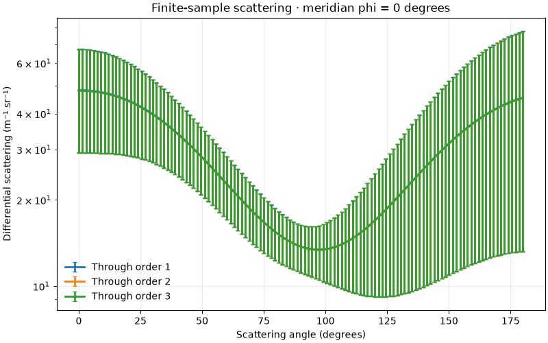
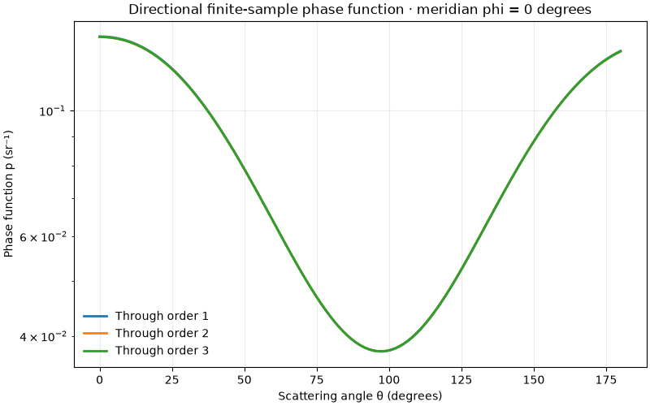
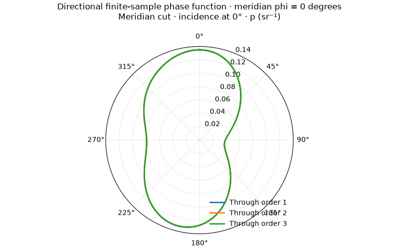
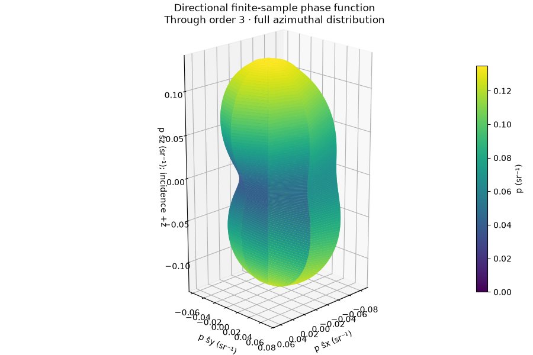
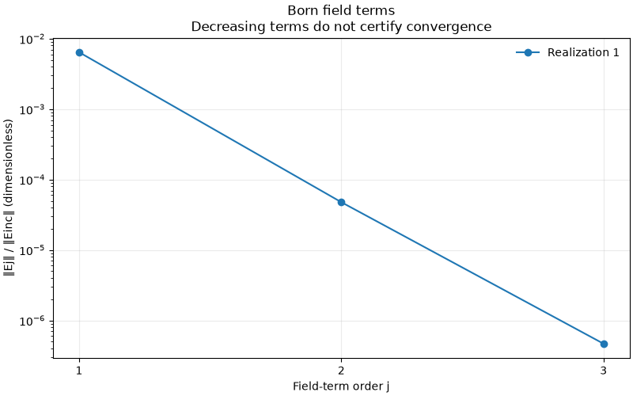
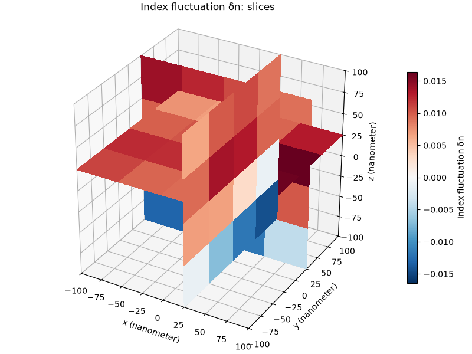

Note
Go to the end to download the full example code.
Matplotlib result plots in 3D#
Use plotting methods directly on a result, then call plt.show() to
display the Matplotlib figures. Sphinx Gallery captures them in the docs.
The phase surface represents directions on a sphere. Its radius and color are probability densities in inverse steradians, not spatial coordinates. The ensemble angular curves show a sampled meridian about incident +z. Use result.azimuth_average() to request an averaged curve explicitly. The 3D surface retains each azimuth direction, showing directional structure in the ensemble intensity average.
import matplotlib.pyplot as plt
from bornsim import EnsembleSampling, Grid, RandomMedium, Solver, Source
from bornsim.media import random_volume
from bornsim.units import ureg
grid = Grid(
shape=(4, 4, 4),
spacing=50 * ureg.nanometer,
)
medium = RandomMedium(
correlation="gaussian",
correlation_length=100 * ureg.nanometer,
)
solver = Solver(
source=Source(wavelength=633 * ureg.nanometer),
order=3,
)
result = solver.ensemble(
medium=medium,
grid=grid,
ensemble_sampling=EnsembleSampling(
realizations=4,
seed=42,
),
)
Differential scattering#
Differential scattering retains its physical units of inverse metres per steradian. Ensemble results also show standard errors on this plot.
result.plot(log_y=True)

Normalized phase function#
Dividing by the integrated coefficient gives a density per steradian.
The normalization is over solid angle, including the sin(theta) measure.
result.plot_phase_function(log_y=True)

Polar meridian cut#
The incident beam points towards 0 degrees, at the top of the plot.
result.plot_phase_function(view="polar")

Three-dimensional directional surface#
Plot the sampled polar and azimuth directions without azimuth averaging. Here four realizations contribute to the ensemble intensity average.
result.plot_phase_function(view="3d")

Numerical field terms#
A fixed random volume need not be axisymmetric. Its field norms can be inspected without inferring a normalized phase function from one cut. Decreasing terms do not certify Born convergence.
volume = random_volume(
medium=medium,
grid=grid,
seed=42,
)
numerical = solver.solve(target=volume)
numerical.plot_field_norms()
plt.show()

Inspect the medium in 3D#
Inspect the actual finite input sample with physical spatial axes. Matplotlib permits rotation with an interactive backend. Call plt.show() to display the figure; the gallery captures a static image.
medium_figure = volume.plot_3d(
mode="slices",
field="delta_index",
)
plt.show()

Total running time of the script: (0 minutes 1.480 seconds)